<--Stigmata page Costumes page-->
Weapons
In the game, there is a large arsenal of weapons to choose from. Most of the valkryia in the game are only capable of using one weapon type. Each one has a basic version of the weapon class once acquired. However, many epic weapons will appear later on granting better perks to the valkyria. Down below is a small amount of information about some weapons. After the description of the weapon, there will be a ranking of 1-star being common, 2-star and 3-star being uncommon, and 4-star being epic.
Kiana & Kallen- Dual Guns
- 2nd Sacred Relic- A light-weight general purpose weapon from the Previous Era unearthed by schicksal at Lake Baikal.
These guns are powered by a mysterious material that resembles a Herrsher Core but could not be characterized
using current technology. 4-star

- Artemis' Guardian- Schicksal manufacactured these pistols 16 years ago. The weapon sports a fine inscription that reads:"
May the moonlight be with you, Kiana. Love, Siegefried, Cecilia, and Theresa." 3-star

- USP45- A pair of .45 ACP caliber pistols designed by the H&K Company for US military and law enforcement agencies.
Accurate and reliable.1-star
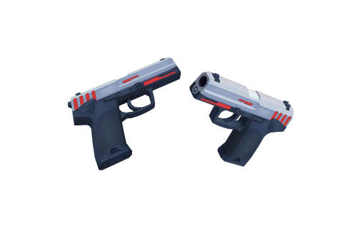 - Holy Guns~Kallen- A member of Schicksal manufactured this pair of pistols many years ago in remembrance of a Valkyrie. This
weapon now sleeps in the heart of Schicksal HQ. 3-star
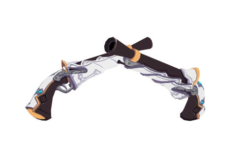
Mei & Yae- Katana
- Gluttony- ME Corp extracted ice- and curative-Honkai cores from Ganesha and then inserted them into a Honkai-receptive
alloy to manufacture this awe-inspiring blade. 3-star
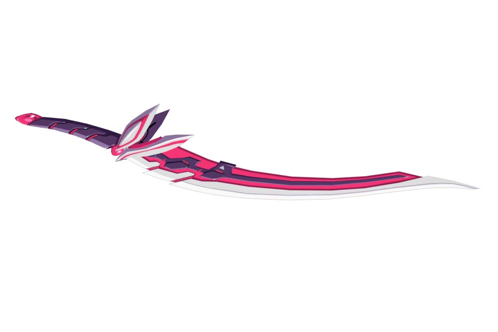 - Alloy Anemoi- A mass-produced blade made by ME Corp based on the Anemoi, a number of its Honkai characteristics, and bionice
technology. Its Honkai force rivals that of the Anemoi. 3-star.
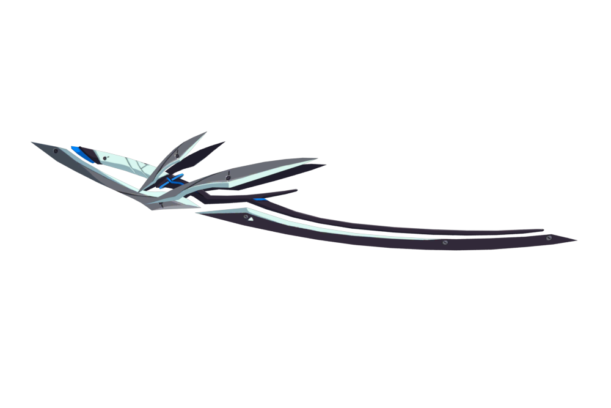 - Lightning Soul- Vast amounts of Honkai energy particles adhere to the surface of the blade. The blade has a unique shape,
not to enhance its performance but to represent the designer's sense of longing...3-star
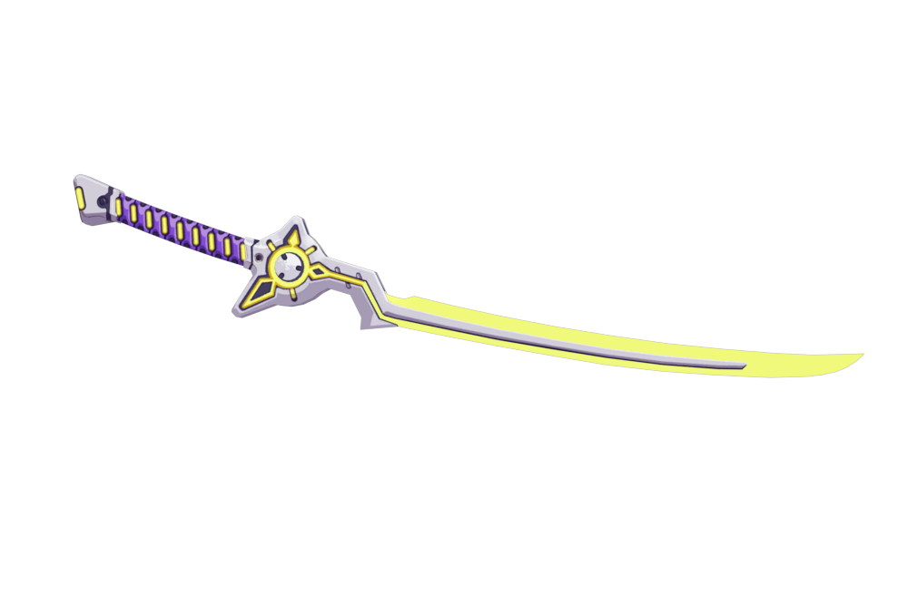
Fu Hua- Gauntlets
- Armored Bracers- Standard-issue Valkyrie gauntlets comprising finger and wrist portions. Even warriors with no
close-quarter combat experiences can easily wield these weapons. However, this weapon has limited destructive potential and
very close range. Few Valkryies will arm themselves with these armored gloves. Perhaps someone will eventually master
this weapon and unleash its true power.1-star
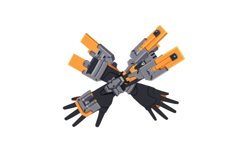 - Grips of Tai Xuan- A mysterious pair of gauntlets made in another Era. The internal structures bear high resemblance to the
Divine Key weapon, Xuanyuan Sword. In fact, both the gauntlets and the blade emit similar auras...4-star
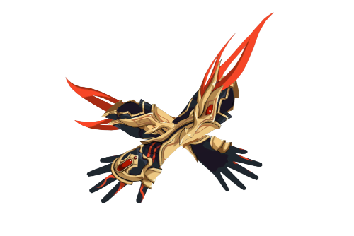
Theresa- Cross
- Oath of Judah- A super weapon from the Previous Era armed with the ultimate "Seal". Once deployed, all nearby
enemies will be imprisoned and rendered completely immobile, effectively nullifying the Honkai energy within them. 4-star
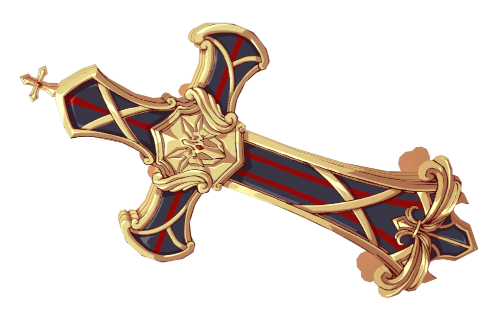 - Ranger's cross- This weapon once belonged to a member of the Twilight Valkyrie Squad that once operated in Siberia. The deadly
weapon was also designed for cold resistance. It was last found impaled on the corpse of a Honkai beast during recovery operations,serving
as a silent testament to the brave warriors who gave their lives fighting. 4-star.
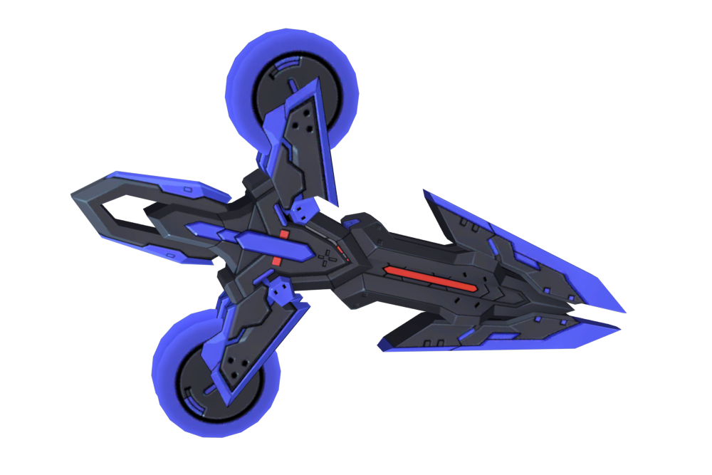 - Jack'o Lantern- "Lost girl, welcome to my garden. Eat as many pumpkins and candy as you want!" said Theresa
Frankenstein. 4-star
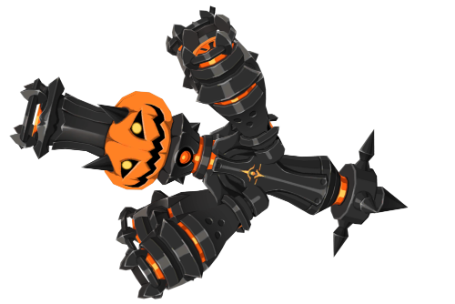
Bronya-Cannon
- MiG~13- A multiple-rocket launch system first developed by the Soviet Union in 1933. First deployed in actual battles during 1941.
2-star.
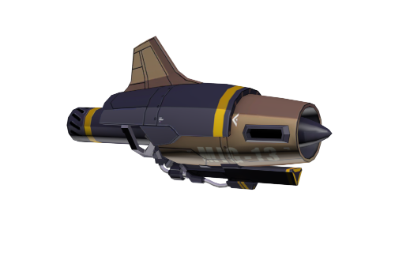 - X-01 Azure Eye- A powerful cannon designed by the Mikoyan Design Bureau. It is named after the legendary cobra
that swallowed the world, signifying the Global Snake's desire to achieve world domination. 3-star
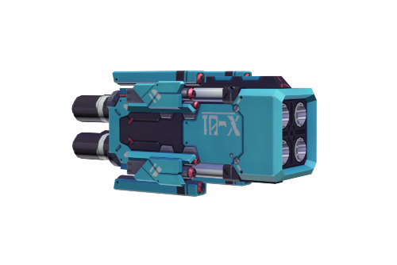
Himeko-Greatsword
- Greatsword- Murata Himeko's favorite greatsword. It may be a bit outdated and not as powerful as it could be, but
it has been by Himeko's side even before she became a Valkyrie. 1-star.
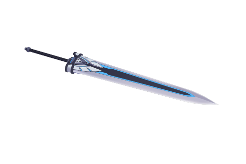 - Judgement by Dawn- Mikoyan Design Bureau furnished this giant chainsword with a Honkai-powered drive. The saw teeth
can easily tear through anything it touches. Kukuria personally loved this weapon. 4-star
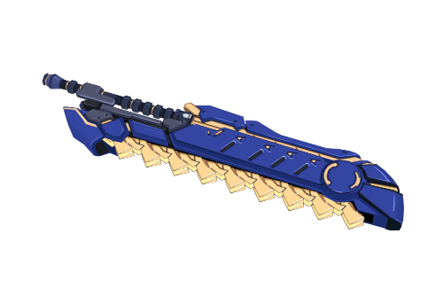